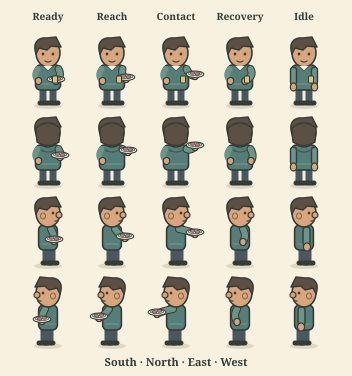

IDLE HANDS 2 · ART STUDY
A little thanks.
A small serving gesture. Not active in the game.
Game size · Aster
Ready to preview. No game action is performed.
One short gesture, then rest. The plate is an illustration, not an inventory count.
View all 20 poses

Aster only. The other three character rigs are not made yet.